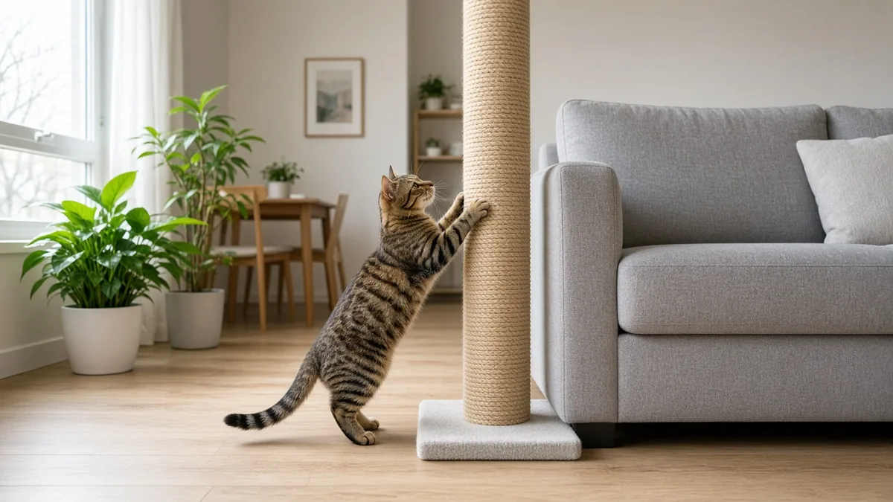
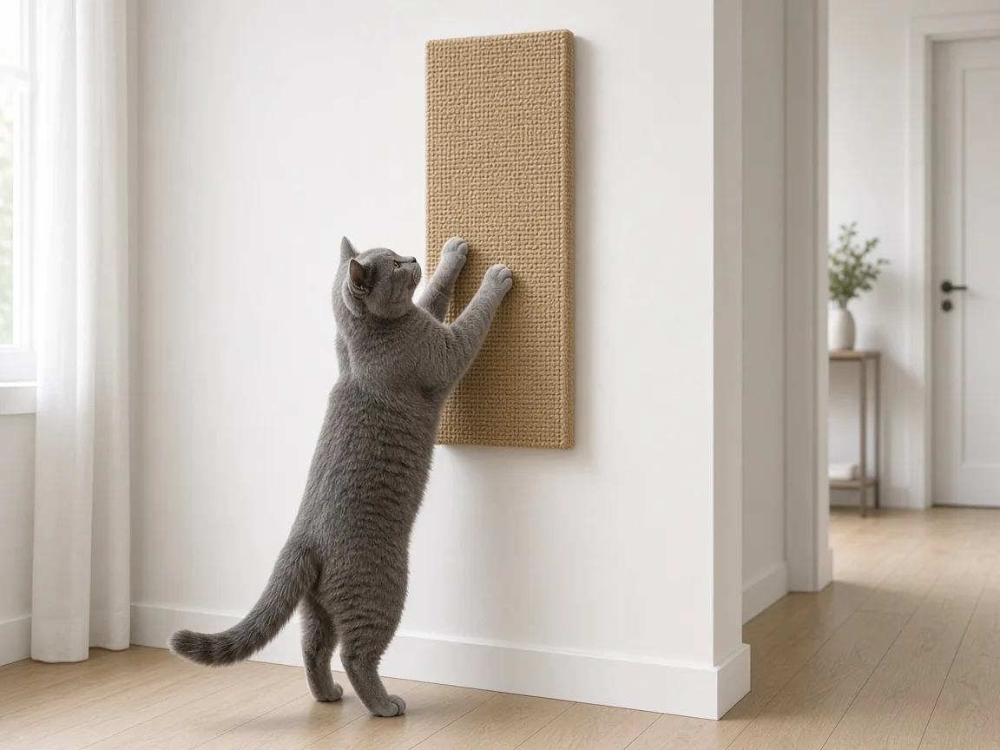

Griffoir pour chat : lequel choisir pour protéger ton canapé en appartement ?

Le dossier du canapé en lambeaux, le coin du matelas effiloché, le papier peint qui part en bandes ? Faire ses griffes est un besoin naturel du chat : il entretient ses griffes, s’étire et laisse son odeur. En appartement, la solution n’est pas de l’en empêcher mais de lui proposer une surface qui lui plaît plus que tes meubles. Voici trois types de griffoirs efficaces et comment choisir le bon.
Comment choisir un griffoir pour chat
- La direction : observe où ton chat griffe. Contre le canapé ou les portes, il lui faut une surface verticale. Sur le tapis ou le sol, une surface horizontale ou inclinée.
- La hauteur : un griffoir vertical doit lui permettre de s’étirer de tout son long. Un poteau trop court ne remplacera pas le dossier du canapé.
- La stabilité : un griffoir qui bouge ou bascule fait peur et sera abandonné. Base large et lourde, ou fixation solide au mur.
- La matière : le sisal et le carton ondulé sont les plus appréciés. Évite les surfaces trop molles, où les griffes n’accrochent pas.
1. Le griffoir mural

Le meilleur gain de place
Fixé au mur ou posé dans un angle, il n’occupe aucune surface au sol : idéal dans un studio ou un couloir étroit. Tu peux le placer à la hauteur qui convient à ton chat, souvent un peu plus haut qu’un poteau classique, pour qu’il s’étire complètement. Il est particulièrement utile juste à côté d’une zone déjà griffée, comme un angle de mur ou le côté d’une porte. Vérifie le type de fixation proposé et adapte les chevilles à ton mur.
Voir sur Amazon : griffoirs muraux2. Le griffoir en carton incliné

Le plus apprécié pour griffer et se coucher
Le carton ondulé offre une prise très agréable pour les griffes et beaucoup de chats l’adoptent tout de suite. Les modèles inclinés ou en forme de vague servent aussi de couchette : ton chat griffe, puis s’y installe. Léger, il se déplace facilement d’une pièce à l’autre. Il laisse quelques miettes de carton et s’use plus vite que le sisal, mais il coûte peu et de nombreux modèles sont réversibles ou rechargeables.
Voir sur Amazon : griffoirs en carton3. Le poteau griffoir haut en sisal

Le classique pour remplacer le dossier du canapé
Un poteau haut, entouré de corde de sisal, reproduit ce que ton chat cherche sur le canapé : une surface verticale, rugueuse et stable. Choisis-le assez grand pour qu’il s’étire pattes tendues, avec une base large qui ne bascule pas quand il tire dessus. Posé juste à côté du canapé, il détourne souvent les griffes en quelques jours. Si tu as la place pour plus grand, vois aussi notre guide arbre à chat pour petit appartement.
Voir sur Amazon : poteaux griffoirsQuel griffoir pour quelle situation ?
| Situation | Griffoir conseillé | Où le placer |
|---|---|---|
| Il griffe le dossier ou les côtés du canapé | Poteau haut en sisal | Collé à la zone griffée |
| Il griffe le tapis ou la moquette | Griffoir en carton à plat ou incliné | Sur ou à côté du tapis |
| Studio ou très petit espace | Griffoir mural | Angle de mur, couloir, côté de porte |
| Chaton ou chat qui découvre le griffoir | Carton incliné, puis poteau | Près de son couchage |
Nos astuces pour qu’il adopte le griffoir
- Place le griffoir là où il griffe déjà, pas dans un coin oublié. Tu pourras le décaler petit à petit une fois l’habitude prise.
- Mets-en un près de son couchage : beaucoup de chats font leurs griffes en se réveillant.
- Frotte un peu d’herbe à chat sur la surface et joue avec un jouet interactif ou une canne à plumes autour pour l’inciter à y planter ses griffes.
- Pendant la transition, couvre la zone du canapé qu’il griffe avec un plaid épais pour la rendre moins intéressante.
- Ne le gronde pas quand il griffe un meuble : redirige-le calmement vers le griffoir et récompense-le quand il l’utilise.
Quel budget prévoir ?
Un griffoir en carton est généralement l’option la moins chère, un griffoir mural ou un poteau en sisal demandent un peu plus selon la taille et la finition. Les prix changent souvent, vérifie-les sur la page du vendeur.
FAQ
Pourquoi mon chat griffe-t-il le canapé alors qu’il a un griffoir ?
Le plus souvent, le griffoir n’est pas au bon endroit ou ne correspond pas à sa façon de griffer. Un chat qui griffe le dossier du canapé cherche une surface verticale, haute et stable : un petit tapis au sol ne l’intéresse pas. Place un poteau ou un griffoir mural juste à côté de la zone griffée.
Griffoir vertical ou horizontal, que choisir ?
Observe ton chat. S’il s’étire debout contre les meubles, choisis un poteau ou un griffoir mural. S’il griffe les tapis et le sol, un griffoir en carton à plat ou incliné lui conviendra mieux. Beaucoup de chats apprécient d’avoir les deux.
Combien de griffoirs faut-il dans un appartement ?
Au moins un par pièce où ton chat passe du temps, en priorité près de son couchage (il griffe souvent au réveil) et près de l’entrée ou du canapé. Dans un petit appartement, un griffoir mural et un carton suffisent souvent.
Comment apprendre à mon chat à utiliser le griffoir ?
Place-le là où il griffe déjà, frotte un peu d’herbe à chat dessus et joue avec une canne à plumes à proximité pour qu’il y plante ses griffes. Récompense-le quand il l’utilise. Ne le gronde pas et ne le porte pas de force vers le griffoir.
Quand faut-il remplacer un griffoir ?
Quand la surface est trop usée pour accrocher les griffes : carton lissé et creusé, sisal effiloché jusqu’au support. Un carton se remplace plus souvent, mais beaucoup de modèles ont des recharges ou sont réversibles. Un poteau en sisal dure plus longtemps et certains se regarnissent.
Notre avis
Si ton chat griffe le canapé, commence par un poteau haut en sisal placé juste à côté. Le griffoir en carton incliné est le complément idéal, apprécié de presque tous les chats et peu cher. Le griffoir mural est la meilleure solution quand la place manque. Pour le reste de son équipement, vois notre guide de l’équipement du chat en appartement.
Liens affiliés Amazon : une commission peut être versée, sans surcoût pour toi.